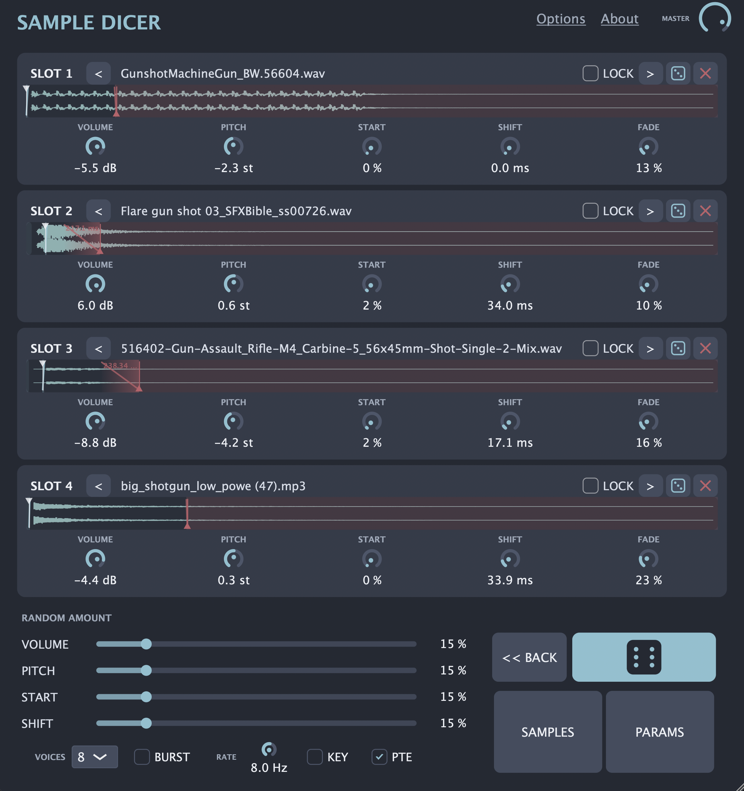

Eight slots
Double the layers for denser drums, textures, impacts and composite effects.
Free VST3 · AU · Standalone
A four-layer one-shot sampler built to turn raw audio into playable, evolving sounds.
Built for flow
Drop in your sounds, shape every layer and create a new combination in a single click. Nothing between the idea and the result.

Sample Dicer Pro
An eight-layer generative sampler built for deeper sound design and faster delivery. Browse entire libraries, shape every layer and render families of finished sounds without leaving the instrument.
Double the layers for denser drums, textures, impacts and composite effects.
Surgical tone shaping on every layer with a real-time spectrum view.
Scan folders once, search deeply, audition instantly and load directly to any slot.
Phase-dispersed transients for laser zaps, synthetic clicks and extra body.
Glue compressor and global ADSR bring the complete layered sound under control.
Move audio straight into your DAW or export multiple variations to disk.
Reopen the last six files from any slot label and keep useful discoveries close.
Work from 100% to 200% with persistent retro-futuristic colour themes.
Commercial rights included. Sounds created or exported with Sample Dicer Pro are royalty-free for music, film, games, sound design and commercial sample libraries.
Buy Sample Dicer Pro on GumroadThe essentials
Move from a single sample to a family of expressive variations—without breaking your creative rhythm.
Four drag-and-drop slots with waveforms, volume, pitch, start, shift and fade controls for each sound.
Randomise samples and parameters together or separately. Lock the layers you want to keep and recall the previous roll with Back.
Per-trigger evolution, Round Robin, Burst repeat and chromatic key tracking keep repetitions alive.
Twenty colour themes, scalable interface presets and an optional Glitch Mode that transforms both sound and visuals.
Made to be useful
One instrument for fast variation across production, performance and interactive media.
Create non-repetitive gunshots, explosions, impacts, magical effects, creature sounds and foley.
Quickly build evolving footsteps, crowds, battles, machinery and environmental textures.
Generate glitch textures, IDM variations, layered percussion, fills, transitions and constantly changing one-shots.
Combine and randomise multiple layers to discover new impacts, weapons, interfaces and cinematic effects.
Trigger controlled variations, bursts and round-robin patterns without preparing every variation in advance.
Turn a folder of raw samples into playable, varied audio while testing a game, scene or musical idea.
Produce batches of related variations from the same source material while keeping pitch, timing, level and fades within defined limits.
Plug in anywhere
Use Sample Dicer inside your DAW or run it on its own. All formats share the same instrument and saved state.
Native Audio Unit for Logic Pro and other AU hosts.
Apple Silicon, Intel Mac and Windows builds for major production environments.
Standalone application. No host required.
macOS 26.0+
Apple Silicon or Intel Mac · AU, VST3 or Standalone
Windows 10 / 11
64-bit system · VST3-compatible host
Current free release
AU, VST3 and Standalone builds for Apple Silicon, Intel Mac and Windows are available through the official pages above.
Indie-friendly license
Sample Dicer is free for independent musicians, bedroom producers, freelancers, indie developers and small studios—even when the work is commercial.
Free while combined annual company revenue remains below USD 1,000,000.
Each project's production and development budget must remain below USD 250,000.
Publish and monetize eligible music, games, films and sound effects with no royalties or attribution.
If either threshold is reached, a paid commercial license is required. Read the full Sample Dicer Indie License 1.0 ↗
Keep it rolling
Sample Dicer is free for eligible indie creators and small studios, including commercial work. If it earns a place in your toolkit, a donation helps fund new features and maintenance.
Or send crypto
Click an address to copy itQuestions, feedback, licensing?
Music projects